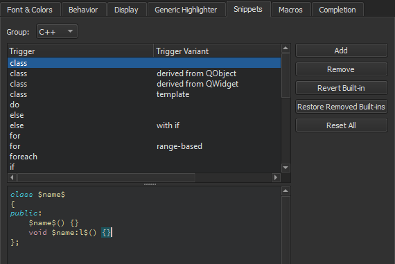

Add code snippets to the auto-complete menu
To add code or text snippets in the snippet editor:
- Select Preferences > Text Editor > Snippets.

- In Group, select the type of snippet to add.
- Select Add.
- Specify a trigger. If the trigger is already in use, add an optional variant. They appear in the list of suggestions when you write code. Also specify a text string or C++ or QML code construct in the snippet editor, depending on the snippet category.
You can use predefined variables in snippets.
See also Complete CMake code, Complete code, Use Qt Creator variables, Nim, Completion, and Snippets.